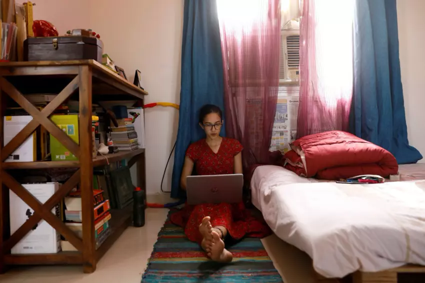

Rise of Home Office, The Thech behind The Home Workers
Covid-19 could permanently shift working patterns as
companies forced to embrace remote working by the pandemic
find that their employees do not want to return to the office
once the closures are lifted.
The sudden increase in working from home is presenting
problems as well as opportunities: on the one hand, startups such
as Slack and Zoom and established
giants including Google and Microsoft are offering their tools for free,
in the hope that people who start using them in a crisis may carry on once
normality returns. So, let's set forth the tech of home working.*
* Alex Hern, 'Covid-19 could cause permanent shift towards home working',
The Gurdian, 13 May 2020.

Image: Reuters/Adnan Abidi
Slack
Slack, the über workplace management tool, is loved and loathed in
equal measure, but one thing it has going for it is its free-to-play
business model: rather than needing to sign up the entire organisation
at once, it is easy for individual teams, desks and offices to get started
with the free tier, and expand as they see fit. That means it is best placed
to help home workers quickly recreate the sort of in-person chat they had in
the office.
Zoom
Videoconferencing tools are 10 a penny, but Zoom has impressed many by
ironing out the kinks in an often-frustrating process. The app lifted its
limit on free accounts as a response to the crisis, and theoretically supports up
to 1,000 participants in a single meeting, though it’s unclear whether that’s actually a positive.
The company has had some controversies, however, from an insecure plugin for Mac clients
that was fixed in June to a questionable “attention tracking” feature that allows horrible
bosses to use AI to check whether their employees are actually looking at the screen.
Trello
Where Slack recreates the feeling of turning to a colleague for a quick chat that’s
as much personal as professional, Trello is more like your boss walking over to
“just check on how you’re doing”. The project management software lets teams arrange
and assign tasks, track wider project progress, and build workflows for repeated jobs – perfect
for day four or five of working from home, when you might start to wonder if your boss has
forgotten you exist.